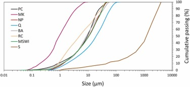
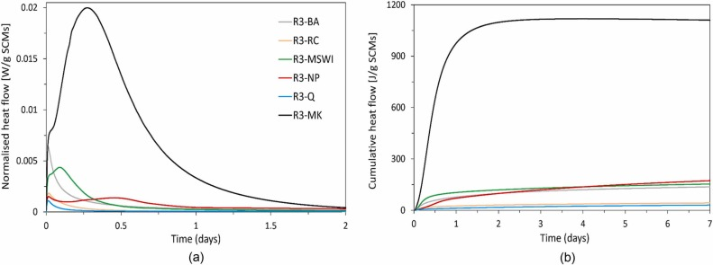

7 NOVEMBRE
2025
Sustainable binders for the stabilisation of road pavement sub base by recycling of biomass ash, municipal solid waste incineration ash and concrete demolition waste.
Construction and Building Materials, Volume 498, 144016
 